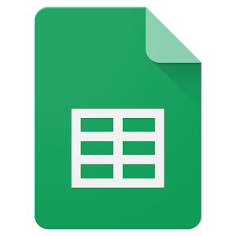

Um zur Liste mit allen anderen Raid Gruppen in der Umgebung zu kommen, hier klicken.
Die Raid Organisation von Friedrichshafen erfolgt über die Messenger App Telegram.
Im Terminkanal werden die Raids für Friedrichshafen organisiert. Im Moment läuft hier (@raidsFN) ein Bot um die Raids automatisch zur Abstimmung zu bringen.
Sollte dieser Bot oder die Map (aus welcher der Bot die Raid Daten bekommt) einmal ausfallen, haben wir nebenbei noch eine Sichtungsgruppe (@sichtungenFN) in der ihr - wie in der dort angepinnten Nachricht beschrieben, melden könnt wenn ein Raid (Level 4/5) auftaucht. Diese Meldung wird dann von einem Admin manuell im Terminkanal zur Abstimmung gebracht.
Falls man etwas zu einem Raid den anderen mitteilen will (z.B. dass man zu spät kommt oder ob nicht jemand früher kommen kann) oder ob man generell über allgemeine Themen, die PokémonGo betreffen reden will, ist die Labergruppe (@pogoFN) der Richtige Ort dafür.
Da der Bot auf einer Map beruht, spenden wir hier im Gebiet gemeinsam für den Bereich Friedrichshafen. Um dies zu ermöglichen sammeln wir via PayPal oder vor Ort von jeder Person pro Monat (freiwillig) einen Euro als Spende zur Unterstützung. Eine Erklärung wie man spenden kann findet ihr hier (alles Transparent und für jeden einsehbar).
Als Anreiz, bekommt jede Person die für die Karte spendet, Zugang zum [Rare] Kanal, in dem seltene Mon die auf der Karte auftauchen automatisch gepostet werden.
Außerdem findet ihr hier auf der Seite noch Nachrichten, Tools und PokémonGo Youtube Kanäle, sowie Links zu anderen Raidgruppen in der Umgebung.
Unsere Facebook Seite:Auf ein erfolgreiches gemeinsames Raiden!
Terminkanal
Im Terminkanal werden die Raids für Friedrichshafen organisiert. Im Moment läuft hier (@raidsFN) ein Bot um die Raids automatisch zur Abstimmung zu bringen.
Solltet ihr mit mehreren Personen kommen, vergesst bitte nicht in der Abstimmung den +1 Button zu drücken. So ist die Wahrscheinlichkeit dass jemand anderes sich entscheide zu dem Raid auch zuzusagen höher.
Bitte vergesst auch nicht eure Stimme zurückzuziehen falls ihr nicht mehr zu dem Raid kommen könnt. Ggf. dies bitte auch in der Labergruppe mitteilen :)
Alternativ: @raidsFN in Telegram oder: t.me/raidsFN
Sobald eine vollständige Sichtung ihren Weg in die Sichtungsgruppe gefunden hat, wird die Sichtung von einem Admin als Umfrage in die Termingruppe zur Abstimmung übertragen. Alle Mitglieder der Gruppen können an den Umfragen teilnehmen und zu der Zeit, zu der sie vor Ort sein können, abstimmen. Die Stimmen können durch klicken auf eine andere Uhrzeit geändert oder durch klicken auf die abgestimmte Uhrzeit zurückgezogen werden.
Sollte jemand mit weiteren Personen kommen, die nicht in der Gruppe abstimmen können, bitte auf den +1 Button drücken!
Sichtungsgruppe
(in Betrieb wenn die Map down ist)
Um Sichtungen von Raids zu teilen und dadurch die Raids so gut wie möglich zu organisieren, haben wir dafür eine Gruppe erstellt. Jedes Mitglied der Gruppe kann die Raids in seiner Nähe (Lvl 4 und Lvl 5) an denen er oder andere Interesse haben, teilen. Diese Raid-Sichtungen können dann von einem Admin zur Termingruppe übernommen werden.
Um die Erstellung bzw. Einstellung der Termine für die Admins möglichst einfach zu halten, ist es erforderlich die folgenden
Informationen bei der Sichtung anzugeben: Mon + Arenaname + Startuhrzeit des Raids.
Außerdem KEINE Screenshots und KEINE Audio Nachrichten.
So könnte eine Raid Sichtung aussehen:
Relaxo ab 16:30 Uhr Uhr an der Arena: "Der Blaue Elefant"
Zur Sichtungsgruppe:

Alternativ: @sichtungenFN in Telegram oder: t.me/sichtungenFN
Laber Gruppe
Zum Austausch über alles andere, was Pokémon Go angeht (Nachrichten, Fragen, Bugs, Events, verspätet zu einem Raid kommen, usw.), haben wir noch eine Telegramgruppe eingerichtet der ihr beitreten könnt. Hier könnt ihr Euch über alles austauschen was nicht in die Termin- bzw. Sichtungsgruppe gehört.
Zur Laber Gruppe:

Alternativ: @pogoFN in Telegram oder: t.me/pogoFN
Map (Karte)
Gemeinsam mit Mitgliedern der Gruppe haben wir für Friedrichshafen eine Karte organisiert, welche die Mon sowie Arenen und Raids anzeigt.
Um für die Karte mit PayPal zu spenden, hier die Aufschlüsselung wie ihr Spenden könnt:
- 1 Euro Spende deckt einen Monat
- 5 Euro Spende deckt 5 Monate
- 10 Euro Spende deckt 10 Monate
Den gewünschten Betrag per PayPal (an Freunde und Bekannte) an die Folgende E-Mail Adresse senden: "pogoteamfn@gmx.de" und nicht vergessen als Mitteilung euren Nicknamen anzugeben und euch bei einem Admin zu melden danach!
Wenn ihr kein PayPal habt, könnt ihr auch vor Ort das Geld an Christopher (@WildChiliHead), Christoph (@Deluge23) oder Corbi (@pixma140) geben und das Geld wird von einem der dreien auf das Sammelkonto zur Bezahlung der Map eingezahlt.
Wenn ihr für die Map gespendet habt, meldet euch bitte bei einem Admin, damit wir euch in der folgenden Tabelle eintragen können. Zur Spendentabelle: 
Wenn ihr schon dabei seid zu Spenden und ihr dem Ersteller des @mypgobot auch noch etwas Geld zukommen lassen wollt,
dann könnt ihr über diesen Link euren gewählten Betrag Spenden: Link
(Bitte Verwendungszweck: "Raids FN"), Danke :)
Zur Karte:
ChiliMap 
Die Karte deckt den folgenden Bereich ab:
Link
Rare Kanal
(nur für Map Unterstützer)
Ein Telegramkanal, der für alle Spieler offen ist, welche die Map durch eine Spende am laufen halten. Hier werden Spawns von seltenen Mon innerhalb der Map ausgelesen und mit Standort und Zeitpunkt des Despawns gepostet.
Der Zugang zu diesem Kanal erfolgt durch Einladung nach erfolgter Spende. Wenn ihr für die Karte gespendet habt, meldet euch bei einem Admin in Telegram. (@pixma140 oder @WildChiliHead)
Tools (Linkliste)
Hier eine Liste mit den wichtigen Links für Mon Go Spieler:
- GymHuntr (Karte):
Link - Beste Movesets für Pokemon finden (damit ihr wisst wofür ihr eure TMs nutzen könnt):
Link - Anzahl Spieler für Raidbosse:
Link - Pokebattler (Kampfsimulation):
Link - Arena Orden Simulator:
Link - Online IV Checker:
Link - IV Checker mit Screen Overlay (Android):
Link - IV Checker mit Screenshots (Android):
Link - IV Checker mit Screenshots (iOS):
Link - Kleines Trainerstatistik Tool (selbstgemacht):
Link
News
- Niantic (DE):
Zu Niantic - Spieletrend (AT):
Zu Spieletrend - SilphRoad:
Subreddit / Homepage (incl. Nestatlas uvm.)
Raidboss Konter
YouTube
Raidgruppen Sammlung:
Hier eine Website mit Links zu Raid Gruppen in ganz Deutschland: Link
Hier eine Liste mit Links zu anderen Raid Gruppen um den Bodensee herum:
Telegram Gruppen
- Friedrichshafen:
Telegram (alternativ @raidsFN) und Telegram (alternativ @sichtungenFN) - Markdorf:
Sichtungen (alternativ @sichtungenMarkdorf) und Raids (alternativ @raidsMarkdorf) - Ravensburg:
Telegram (alternativ @epi_raid) - Konstanz + Umgebung:
Telegram (alternativ @KreuzlingenKonstanzRaidtermine) - Salem:
Telegram (alternativ @raidsSalem) - Tettnang:
Telegram (alternativ @tettnangraids)
Whatsapp Gruppen
- Überlingen:
Whatsapp - Konstanz:
Whatsapp - Bermatingen und Umgebung:
Whatsapp - Ravensburg:
Whatsapp - Tettnang:
Whatsapp (Raids) und Whatsapp (Labern) - Lindau:
Whatsapp - Leutkirch:
Whatsapp - Wangen:
Whatsapp - Allgäu/Bodensee (Laber Gruppe):
Whatsapp